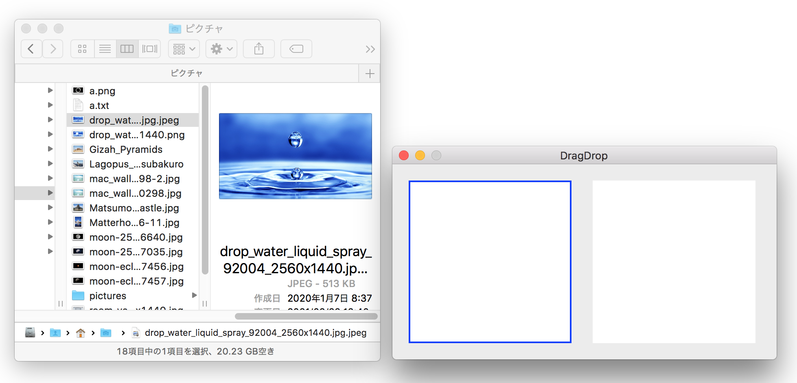

Finderからイメージファイルをドラッグしビューに
表示する

画像をクリックすると動画になります。
本章ではドラッグされたオブジェクトを受け入れるドロップ処理について説明する。
他のアプリケーション（Finder）からFile URLオブジェクトをドラッグし、ファイルがイメージ（png, jpeg等）であれば当アプリケーションのビューにドロップし表示する。オブジェクトの受け渡しは、システムが提供するアプリケーションで共有するドラッグ用ペーストボードを介して行われる。
ドロップ処理はNSViewクラスのサブクラスに実装し、それをドロップを実行するビューとする。
ペーストボードのイメージ
![[pasteboard]](/lib/HTMLofImage.html?filename=/data/B47/pasteboard.png&title=copy_paste1pasteboard&width=700)
受け入れ可能オブジェクトの種類を指定する
ドラッグ用ペーストボードに受け入れ可能なオブジェクトの種類を UTI（Uniform Type Identifier）文字列で指定する。本例では fileURLを受け入れ可能とする。なお、UTI文字列は、KUType〜定数で指定すればコーディングミスが防げる。
本来はUTI定数をグループ化してラップした NSPasteboardクラスの PasteboardType定数を使う方が便利だが、fileURL定数は OS10.13+であったりするので、このような方法をとった。
なお、NSViewクラスは NSDraggingDestinationプロトコルに準拠しているため、次に示す registerForDraggedTypesメソッドをはじめドラッグの目的地として必要なメソッドを無条件に呼び出すことができる。
ドロップの実行
次の二つのメソッドを実装（オーバーライド）する。
draggingEnteredメソッドは NSDragOperationを返すだけのメソッドだが必ず実装すること。戻り値は genericを返しておけばよい。（それ以外を返す必要のあるケースを今のところ思いつかない）
ドロップの本体処理
オブジェクトの存在チェックを行い、オブジェクトがFileURLであればファイルをイメージとして読み込み、読み込めたらビューに表示する。
[別解] ペーストボードのURLオブジェクトをUTIを指定して読み込む。
ソースコード
ドラッグ＆ドロップ、コピー＆ペーストの全ての処理を網羅した共通のアプリケーションとなっている。
AppDelegate アプリケーション制御
UAView NSViewクラスのサブクラス
NSView+imageDisplay イメージの表示サイズを変更するユーティリティ